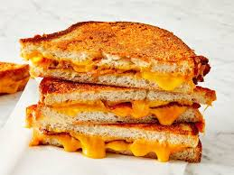

Grilled Cheese Sandwhich

A grilled cheese is a siimple classic. Not much else to be said, however for those that find themselves struggling to make the perfect girlled cheese, this recipe should make a great guide on the path to mastery!
Ingrediants
Butter or butter sustitiute
Steps to Prepare
Get the bread and set it on a plate
Put butter on one side of each slice
On the oppsite side of one ofthe slice add the cheese (not to much or else it wont melt well)
Put the buttered bread togther, with the buuter on the outside, to completethe sandwhich
Get a pan and heat it to around medium heat (a little hotter than medium usually works best)
Once pan is heated set grilled cheese on and check periodically until one side is golden brown, then flip
Grilled Cheese Sandwhich is done once both sides are toasted to your liking or once the cheese has completley melted
Enjoy!
Back to recipe list page